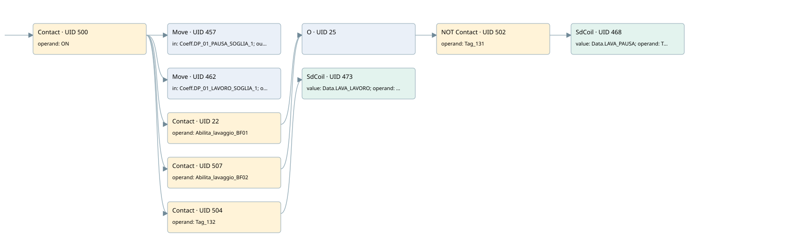

work pause times for filter valves
filter · 검색 색인 순서 6 · 원본 내부 NID 추정 4
백업 PLF 원본의 2728124 바이트 위치에서 복원한 XML. 검색 문서 1887의 객체 키 161022002a11000000000000와 연결했다. 이름 해석 13/13개. 남은 RefId는 상수 또는 미해석 참조다.
연결 구조 다시 그리기
원본 Part/PCon/Wire를 이용한 연결도다. TIA 화면의 래더 배치 또는 실행 결과를 재현한 그림은 아니다. 핀 연결은 아래 표와 원본 XML을 기준으로 읽는다. 노드 위에 마우스를 두면 피연산자 이름을 볼 수 있다.

접점·코일·블록과 피연산자
| Part UID | Gate | Negated 핀 | 연결 피연산자 |
|---|---|---|---|
| 500 | Contact | operand = ON | |
| 457 | Move | in = Coeff.DP_01_PAUSA_SOGLIA_1; out1 = Data.LAVA_PAUSA | |
| 462 | Move | in = Coeff.DP_01_LAVORO_SOGLIA_1; out1 = Data.LAVA_LAVORO | |
| 22 | Contact | operand = Abilita_lavaggio_BF01 | |
| 507 | Contact | operand = Abilita_lavaggio_BF02 | |
| 25 | O | ||
| 502 | Contact | operand | operand = Tag_131 |
| 468 | SdCoil | value = Data.LAVA_PAUSA; operand = Tag_132 | |
| 504 | Contact | operand = Tag_132 | |
| 473 | SdCoil | value = Data.LAVA_LAVORO; operand = Tag_131 |
접점 경로를 펼친 조건식
Contact·O/A·비교기의 원본 연결을 읽기 쉽게 펼친 보조 해석이다. POWER는 전원 레일 시작을 뜻한다. 호출 블록·에지·타이머의 내부 동작과 다중 쓰기 순서는 이 표로 실행 검증하지 않았다. 미해석 핀과 RefId는 원문 연결표에서 확인한다.
| UID | 동작 | 대상 | 원본 접점 경로 | 내용 |
|---|---|---|---|---|
| 457 | Move | Data.LAVA_PAUSA | ON | Move 입력 Coeff.DP_01_PAUSA_SOGLIA_1 |
| 462 | Move | Data.LAVA_LAVORO | ON | Move 입력 Coeff.DP_01_LAVORO_SOGLIA_1 |
| 468 | SdCoil | Tag_132 | (((ON AND Abilita_lavaggio_BF01) OR (ON AND Abilita_lavaggio_BF02)) AND NOT [Tag_131]) | 시간 동작 SdCoil; 타이머 의미 추가 확인 / 시간 인자 Data.LAVA_PAUSA |
| 473 | SdCoil | Tag_131 | (ON AND Tag_132) | 시간 동작 SdCoil; 타이머 의미 추가 확인 / 시간 인자 Data.LAVA_LAVORO |
원본 배선 연결
| Wire UID | 동일 Wire 연결 끝점 |
|---|---|
| 506 | Powerrail {} ↔ Part 500.in |
| 486 | ORef 475 (ON) ↔ Part 500.operand |
| 501 | Part 500.out ↔ Part 457.en ↔ Part 462.en ↔ Part 22.in ↔ Part 507.in ↔ Part 504.in |
| 487 | ORef 476 (Coeff.DP_01_PAUSA_SOGLIA_1) ↔ Part 457.in |
| 488 | Part 457.out1 ↔ ORef 477 (Data.LAVA_PAUSA) |
| 489 | ORef 478 (Coeff.DP_01_LAVORO_SOGLIA_1) ↔ Part 462.in |
| 490 | Part 462.out1 ↔ ORef 479 (Data.LAVA_LAVORO) |
| 21 | ORef 23 (Abilita_lavaggio_BF01) ↔ Part 22.operand |
| 24 | Part 22.out ↔ Part 25.in1 |
| 510 | ORef 508 (Abilita_lavaggio_BF02) ↔ Part 507.operand |
| 26 | Part 507.out ↔ Part 25.in2 |
| 27 | Part 25.out ↔ Part 502.in |
| 492 | ORef 481 (Tag_131) ↔ Part 502.operand |
| 503 | Part 502.out ↔ Part 468.in |
| 491 | ORef 480 (Data.LAVA_PAUSA) ↔ Part 468.value |
| 494 | ORef 482 (Tag_132) ↔ Part 468.operand |
| 496 | ORef 484 (Tag_132) ↔ Part 504.operand |
| 505 | Part 504.out ↔ Part 473.in |
| 495 | ORef 483 (Data.LAVA_LAVORO) ↔ Part 473.value |
| 498 | ORef 485 (Tag_131) ↔ Part 473.operand |
식별자 해석 근거 13개
| ORef UID | RefId | 이름 | IdentXmlPart 파일 | 해석 방법 |
|---|---|---|---|---|
| 475 | 52 | ON | 0594-IdentXmlPart.xml | UID/RID + search-text + NID agreement |
| 476 | 10 | Coeff.DP_01_PAUSA_SOGLIA_1 | 0596-IdentXmlPart.xml | UID/RID + search-text + NID agreement |
| 477 | 11 | Data.LAVA_PAUSA | 0596-IdentXmlPart.xml | UID/RID + search-text + NID agreement |
| 478 | 13 | Coeff.DP_01_LAVORO_SOGLIA_1 | 0596-IdentXmlPart.xml | UID/RID + search-text + NID agreement |
| 479 | 14 | Data.LAVA_LAVORO | 0596-IdentXmlPart.xml | UID/RID + search-text + NID agreement |
| 23 | 63 | Abilita_lavaggio_BF01 | 0598-IdentXmlPart.xml | UID/RID + search-text + NID agreement |
| 508 | 65 | Abilita_lavaggio_BF02 | 0598-IdentXmlPart.xml | UID/RID + search-text + NID agreement |
| 481 | 60 | Tag_131 | 0594-IdentXmlPart.xml | UID/RID + search-text + NID agreement |
| 482 | 61 | Tag_132 | 0594-IdentXmlPart.xml | UID/RID + search-text + NID agreement |
| 480 | 11 | Data.LAVA_PAUSA | 0596-IdentXmlPart.xml | UID/RID + search-text + NID agreement |
| 484 | 61 | Tag_132 | 0594-IdentXmlPart.xml | UID/RID + search-text + NID agreement |
| 485 | 60 | Tag_131 | 0594-IdentXmlPart.xml | UID/RID + search-text + NID agreement |
| 483 | 14 | Data.LAVA_LAVORO | 0596-IdentXmlPart.xml | UID/RID + search-text + NID agreement |
검색 코드 보조 자료
참조 명칭을 찾기 위한 자료이며 실행 순서나 AND/OR 관계는 위 연결표로 확인한다.
"on" move "coeff".dp_01_pausa_soglia_1 move "coeff".dp_01_lavoro_soglia_1 "data".lava_lavoro #abilita_lavaggio_bf01 "tag_131" "tag_132" "data".lava_pausa #abilita_lavaggio_bf02 "tag_132" "tag_131" "data".lava_lavoro "data".lava_pausa